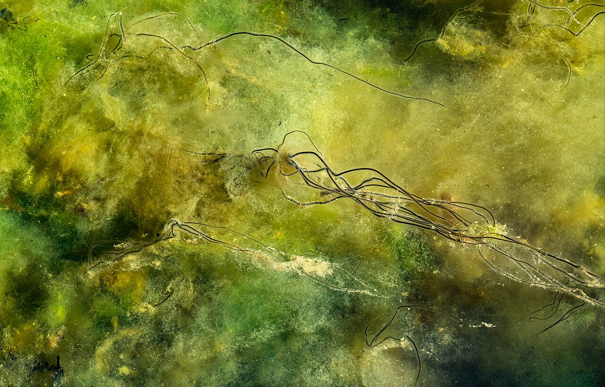
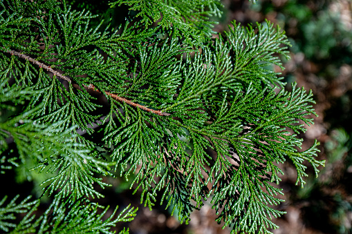
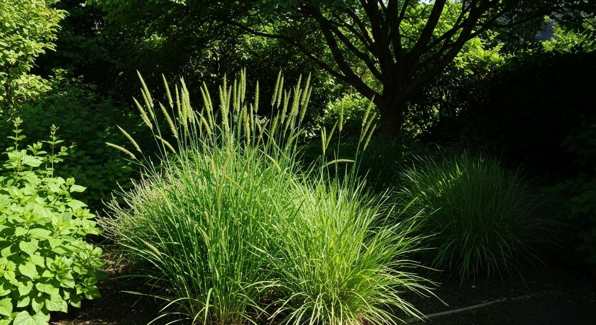
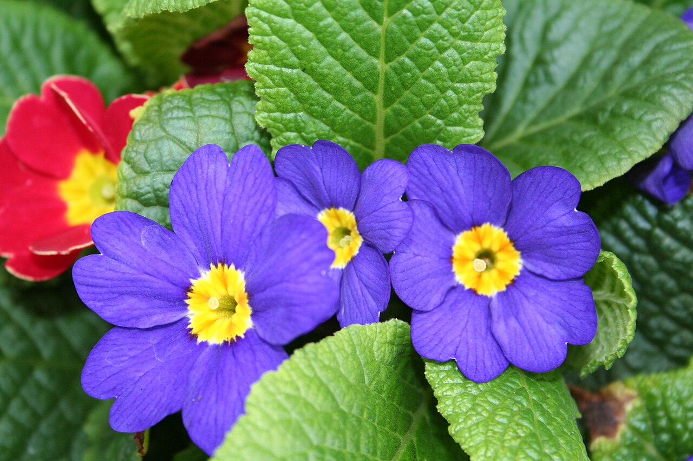

Comprendre
Comprendre comment les plantes ont conquis tous les milieux.

Il y a environ 470 millions d'années, les premières plantes ont quitté l'eau. Pour vivre sur terre, elles ont dû résoudre quatre problèmes. Suis leur histoire, des algues aux plantes à fleurs.
Commencer le voyageChoisis une étape de l'évolution des végétaux.

1Thalle, vie aquatique
plus de 1 milliard d'années 2
2
Cuticule, stomates, rhizoïde
environ 470 Ma - Copie.jpg) 3
3
Vaisseaux, lignine, racines
environ 430 Ma
4Pollen, graine nue
graines: environ 370 Ma
5Fleur, fruit, pollinisation par le vent
environ 130 Ma
6Fleur, fruit, pollinisation par les insectes
environ 130 Made plus en plus indépendantes de l'eau
Comprendre comment les plantes ont conquis tous les milieux.
Observer des plantes autour de toi, de l'algue à la plante à fleurs.
Faire le lien entre l'évolution des fleurs et les cultures, comme le cacaoyer ou le riz.